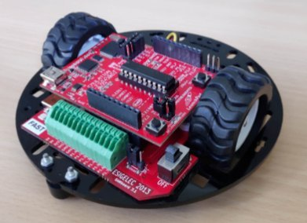
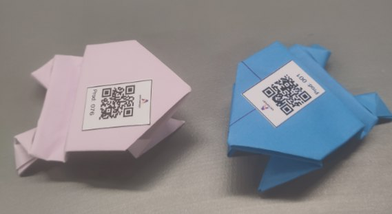

On ne peut pas modéliser un comportement qu'on n'a pas mesuré. Pour estimer les chaînes de Markov de ma thèse, il me fallait des transitions réellement observées : à quel moment une personne quitte son poste, combien de temps elle s'absente, quand elle revient, combien de temps une opération lui prend la dixième fois comparée à la première.
Les jeux de données existants ne le permettaient pas. Ils se limitent souvent à une modalité, sont enregistrés en environnement contrôlé avec un seul opérateur, ne portent pas d'indicateurs de production horodatés, et ne sont pas reliés aux logiciels qui pilotent la production.
J'ai contribué à un dispositif à deux canaux qui partagent la même horloge. D'un côté l'image : des caméras fixes et motorisées couvrent chaque poste de dessus et de côté, et un casque de réalité augmentée filme ce que voit l'opérateur. De l'autre la déclaration : un module Odoo de suivi des opérations, où chaque étape est ouverte et fermée par un scan QR, avec son opérateur, son poste et son horodatage à moins d'une seconde près.
Le module Odoo guide l'opérateur à travers quatre états. Il quitte une zone non productive, scanne la pièce qu'il prend, réalise l'opération, puis déclare son résultat : terminée, interrompue ou défectueuse. Chaque passage est horodaté.
C'est la jonction des deux canaux qui compte. Un enregistrement vidéo sans contexte oblige à tout regarder pour trouver quelque chose. Des déclarations sans image ne disent pas ce qui s'est passé pendant les blancs. Mises à la même horloge, les deux se répondent : chaque opération déclarée pointe directement sur la séquence vidéo qui la montre.
Deux activités ont été retenues parce qu'elles produisent des gestes répétitifs, comparables d'une personne à l'autre et mesurables sans capteur porté. Elles donnent son nom au jeu de données : des grenouilles en origami — frogs — et des robots éducatifs — bots.


Trois courts extraits de la vue à la première personne, pendant une session de pliage. On y suit le geste, le scan de la pièce et la validation de l'étape sur la tablette — les trois événements que le dispositif relie entre eux.
Extraits recadrés sur la vue rapprochée : ils ne montrent que des mains et des objets. Projet AntiHpert, CESI LINEACT et ESIGELEC.
Au total : plus de quinze heures de vidéo annotée et six opérateurs différents. Chaque opération donne une fiche qui relie l'opérateur, la pièce, l'opération, sa durée et les caméras qui la montrent.
{
"Date": "2024-06-27 07:42:44",
"User": "User01",
"zone": "ahpt zone(6,)",
"Ref": "PrD013",
"operation": "F0p21-00",
"start video time": "00:01:10",
"end video time": "00:01:45",
"durations": "0:00:34",
"Top cam": "7",
"Side cam": "8",
"act": "nextOP",
"AR": "0"
}
Exemple d'annotation d'une opération, tel que présenté à la soutenance. L'opérateur y est désigné par un pseudonyme.
Les fichiers sont rangés par activité, par site et par session : pour chacune, les vidéos de toutes les caméras, les annotations de chaque opérateur et une fiche de session.
AntiHPert_Dataset/ ├── Origami/ │ ├── CESI/Session_1/date1/ │ │ ├── Video/ Cam1.mp4 … Cam10.mp4, PTZcamera.mp4, AR.mp4 │ │ ├── Annotations/ user_1.json, user_2.json, … │ │ └── session_info.txt │ └── ESIGELEC/ … ├── Maintenance/ │ └── ESIGELEC/Session_01/ … ├── README.md └── LICENSE.txt
Un manuscrit de description du jeu de données est en préparation.
Ce dispositif filme des personnes au travail. Les enregistrements complets, les vues où une personne est reconnaissable et les données individuelles ne sont pas publiés sur ce site : ils restent dans le cadre du projet de recherche qui les a recueillis.